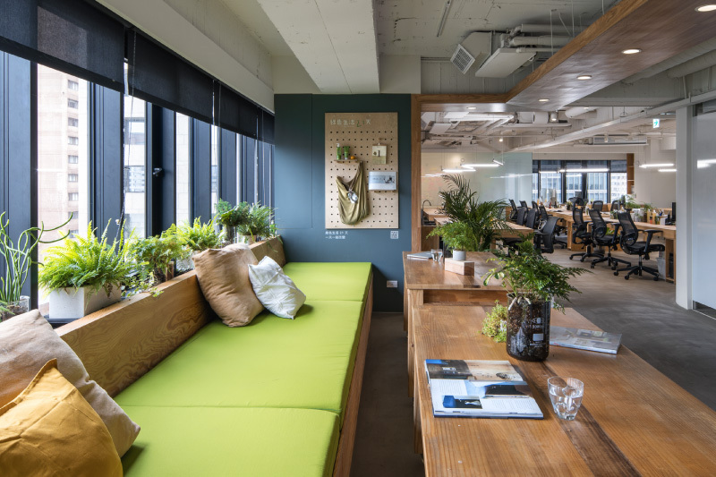

綠藤實習計劃的緣起
「如果讓我回到那年的暑假，我希望有一個怎麼樣的實習機會？」
這是綠藤團隊心裡的問題。
「我想要跟一個充滿理念、讓這個世界好一點的團隊一起努力！」
「我想要快樂的學習，學習專業、學習溝通、學習做一個更好的人。」
「我想要貢獻我在學校所學、看看理論跟實務到底有多少差距。」
「我想要讓履歷表增添色彩。」
「我想要追求成就感，動手，直接看見我對一個組織可以帶來的改變！」
我們相信，如果市面上找不到自己想要的，那就自己創造吧！
也因此，從 2013 年的夏天開始，綠藤精心打造了一個與眾不同的實習計劃，並一直持續至今。